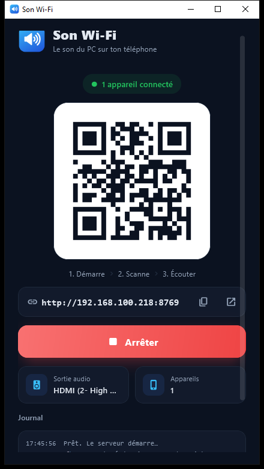

Son Wi-Fi envoie le son de Windows vers ton iPhone par le Wi-Fi. Rien à installer sur le téléphone : tu scannes le QR code, tu appuies sur Écouter, c'est tout.
Windows 10 / 11 · iPhone, Android, tablette · Gratuit, sans compte

Tout ce qu'il faut pour écouter ton PC sans fil, sans coupure et sans réglage.
L'appli démarre le serveur toute seule et affiche un QR code. Tu le scannes avec l'appareil photo, c'est connecté.
Comme une vidéo en streaming : 6 niveaux de 96 à 1536 kb/s. La qualité baisse si le Wi-Fi rame et remonte quand il va mieux.
Si un paquet arrive en retard, un son de remplacement et des fondus enchaînés comblent le trou. Pas de clic, pas de silence brutal.
Trouve tout seul la meilleure qualité qui ne coupe jamais, puis se verrouille dessus. Il ignore les petites variations du réseau.
Un bouton empêche le téléphone de se mettre en veille, pour que le son ne s'arrête pas quand l'écran s'éteint.
Aucun compte, aucun cloud : le son reste sur ton réseau Wi-Fi. Le code est open source, sous licence MIT.
Le PC et le téléphone doivent juste être sur le même Wi-Fi.
Ouvre SonWifi.exe. Le serveur démarre tout seul et le QR code apparaît.
Avec l'appareil photo du téléphone. La page s'ouvre dans le navigateur, sans rien installer.
Le son du PC (musique, vidéos, jeux…) sort maintenant de ton téléphone ou de tes écouteurs.
Un sélecteur sur le téléphone, trois façons d'écouter.
Économise le Wi-Fi. Idéal si le réseau est chargé ou loin de la box.
Le mode par défaut. Trouve la meilleure qualité qui tient, et ne bouge plus.
Qualité maximale, son sans perte, avec une grande réserve anti-coupure.
Non. Tout se passe dans le navigateur (Safari, Chrome…). Il suffit de scanner le QR code.
Oui : tout téléphone, tablette ou ordinateur avec un navigateur récent peut écouter. Plusieurs appareils peuvent se connecter en même temps.
Environ 0,1 à 0,3 seconde selon le Wi-Fi et le mode. Parfait pour la musique et les vidéos ; pour les jeux très rapides, un léger décalage peut se sentir.
L'exécutable n'est pas signé (c'est payant). Clique sur « Informations complémentaires » puis « Exécuter quand même ». Le code source est public si tu veux vérifier ou compiler toi-même.
C'est normal : le téléphone doit pouvoir joindre le PC. Autorise Son Wi-Fi sur les réseaux privés.
pip install -r requirements.txt puis python app.py (interface) ou python son_wifi.py (terminal).
Gratuit, open source, et prêt en quelques secondes.